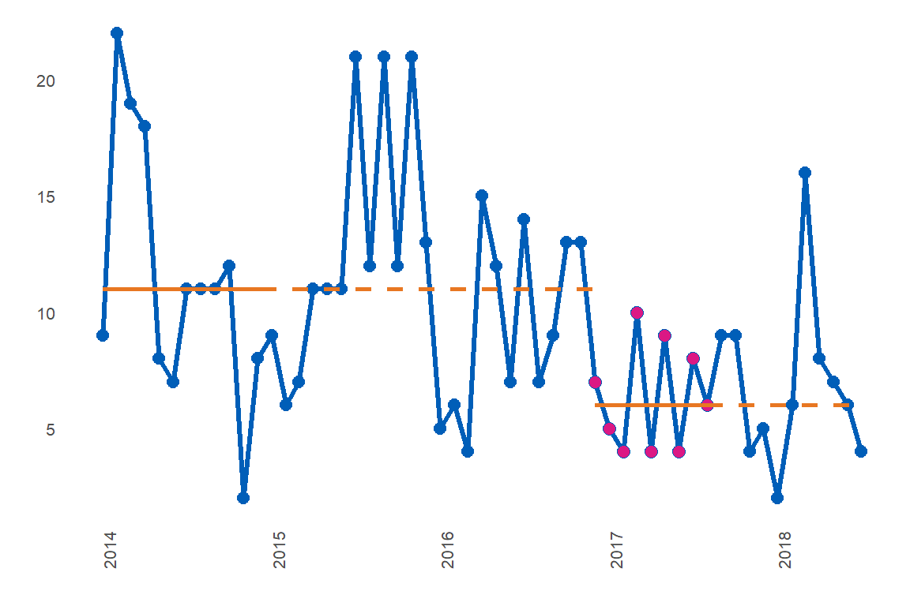
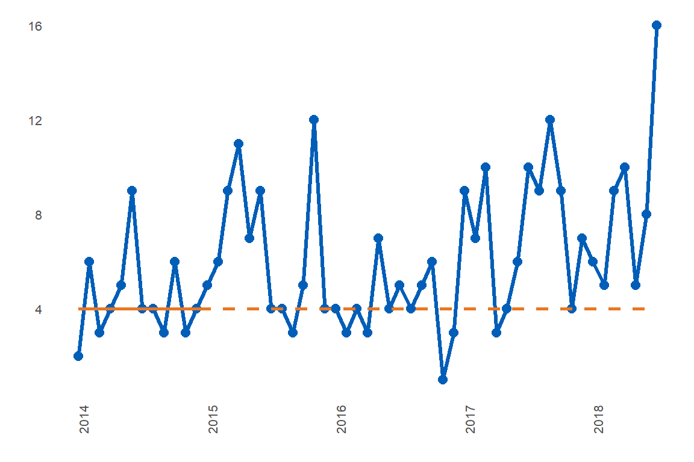
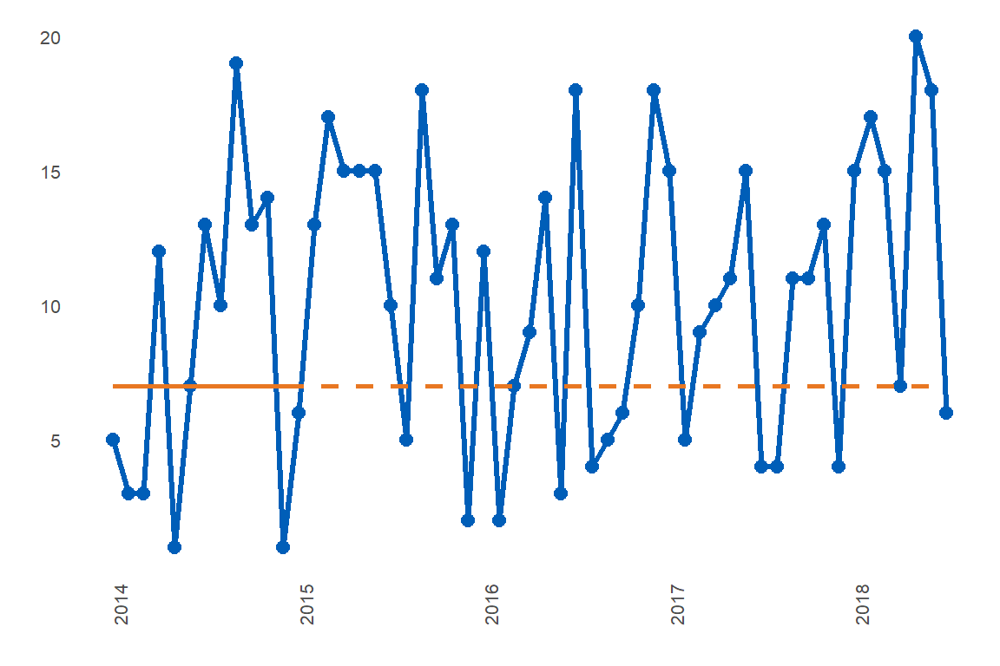

vignettes/how-to-create-multiple-runcharts.Rmd
how-to-create-multiple-runcharts.RmdWe’ve seen how to create a single runchart. What if we have several, or many, that we want to analyse and plot individually? We can take use the purrr and dplyr packages to assist with this task
Here we take the built-in dataset ‘signals’ and create a nested dataframe using tidyr’s nest() function. Because the “grp” column is used internally in the runcharter function, we create a dummy, outer grouping variable using it, purely for nesting purposes. We group by this dummy variable, create a nested dataframe, and use purrr::map to apply the runcharter function to each individual group in turn.
library(runcharter)
library(tidyr)
library(purrr)
library(dplyr)
#>
#> Attaching package: 'dplyr'
#> The following objects are masked from 'package:stats':
#>
#> filter, lag
#> The following objects are masked from 'package:base':
#>
#> intersect, setdiff, setequal, union
multiple_by_ward <- signals %>%
mutate(out_group = grp) %>%
group_by(out_group) %>%
tidyr::nest() %>%
mutate(runcharts = purrr::map(data,runcharter,
med_rows = 13,
runlength = 9,
chart_title = NULL,
chart_subtitle = NULL,
direction = "below",
faceted = FALSE))
#> all sustained runs found, not enough rows remaining for further analysis
#> Improvements noted, not enough rows remaining for further analysis
#> no sustained runs found
#> no sustained runs found
The function will print the plots, and return a nested dataframe containing:
The latter 3 items can be retrieved from the list and used to create new plots (if, for example, you would like different plot themes or colours from the package defaults), or to create a faceted plot.
It is not recommended to use very short runs as a basis for evidencing improvement. The following example is used only to demonstrate that the runcharter function will find multiple successive runs in the desired direction
library(runcharter)
library(tidyr)
library(purrr)
library(dplyr)
by_ward_above <- signals %>%
mutate(out_group = grp) %>%
group_by(out_group) %>%
tidyr::nest() %>%
mutate(runcharts = purrr::map(data,runcharter,
med_rows = 3,
runlength = 3,
chart_title = NULL,
chart_subtitle = NULL,
direction = "above",
faceted = FALSE))
#> no sustained runs found
#> all sustained runs found, not enough rows remaining for further analysis
#> all sustained runs found, not enough rows remaining for further analysis
#> all sustained runs found, not enough rows remaining for further analysis